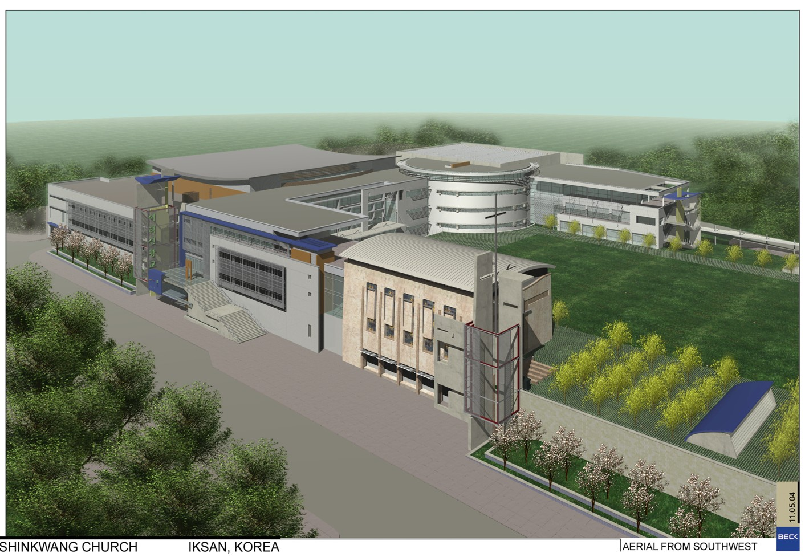

Project Scope
건축 설계 & 건설사업관리
Architecture & CM Expertise
총괄 설계 및 책임 감리 | 현장 경험을 바탕으로 한 시공 중심 설계

RESIDENTIAL
공동주택
아파트, 연립주택 등 공동주거시설의 건축 설계 및 총괄 감리. 구조·기계·전기 통합 설계로 품질과 안전성을 동시에 확보합니다.

HOSPITAL · MEDICAL · EDUCATION
병원·의료시설 / 교육·연구시설
복합 설비 시스템이 요구되는 의료·교육 시설 특화 설계. 기계설비 전문 지식으로 기능성과 안전성을 완벽히 구현합니다.

FACTORY · INDUSTRIAL · ENVIRONMENT
공장·산업시설 / 환경플랜트
공장, 하수·폐수처리 공정 설비 등 산업·환경 시설 설계. HVAC, 소방, 기계 설비 통합 검토로 운영 효율과 안전성을 극대화합니다.
FACTORY · INDUSTRIAL
익산 하림 공장
식품 제조 산업시설의 출하장·사무실·지게차 통로 증축 설계. 기계설비 전문 지식을 바탕으로 HVAC, 소방, 공조 시스템을 통합 검토하여 공정 효율과 안전성을 극대화합니다.

HOSPITAL · MEDICAL · EDUCATION
원광대학교 병원
의료 환경의 특수성을 반영한 병원 및 수술실 크린룸 설계·감리. 복합 기계설비 시스템의 정밀한 검토와 건축·기계 통합 설계로 안전하고 기능적인 의료 공간을 실현합니다.

RELIGIOUS · COMMUNITY
신광교회Shinkwang Church, Iksan
종교 및 커뮤니티 복합시설의 건축 설계 및 감리. 예배 공간의 기능성과 공간 효율을 동시에 고려하여, 구조·기계·설비 통합 설계로 안전하고 지속 가능한 공동체 공간을 구현합니다.